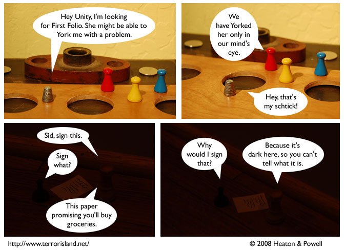

Strip #294
— Monday, April 28, 2008
Schtick-stealing is so rude
Notes, Thoughts, &c.
Ben’s Notes
This is based on times when unscrupulous people have tried to get me and Lewis to sign things.
Fortunately for us, we’re illiterate.
Lewis’s Notes
You may ask, doesn’t it upset the balance to steal someone’s schtick? The answer is that schticks have no metaphysical mass, and thus, cannot alter the balance. It’s a lot like how pirating mp3s doesn’t really count as stealing.